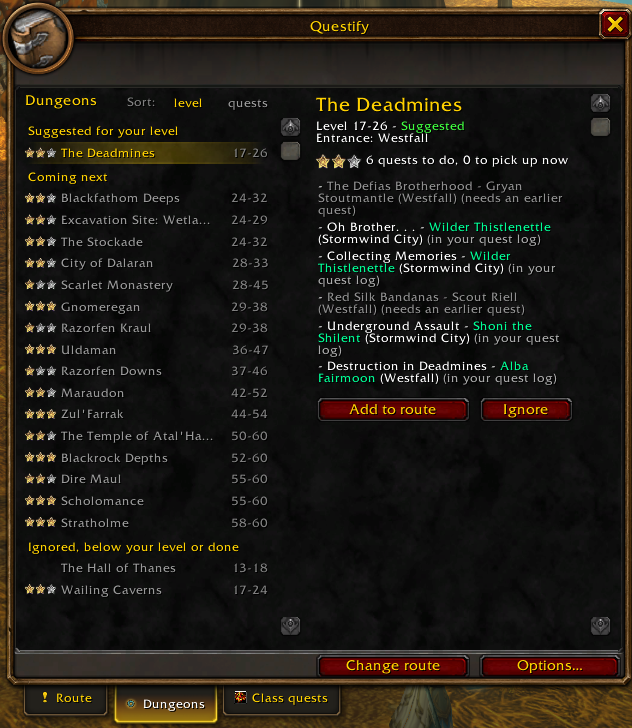

Every dungeon of your faction, grouped: suggested for your level, coming next, then ignored, below your level or done. One to three stars tell how many quests are left to do there; sort by level or by quests.
On the right, the selected dungeon: its entrance, the quests to pick up with their givers, the ones that need an earlier quest, and one click to add it to your route.
Level 19: The Deadmines, 6 quests to do.
